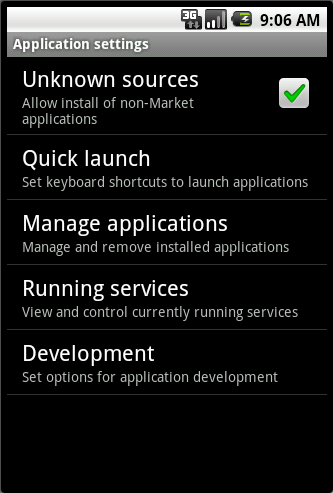
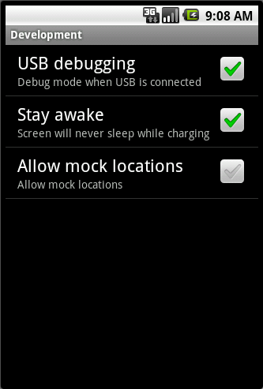

Android 携帯電話をセットアップする
このセクションでは、お使いの携帯電話を App Inventor での開発に使えるようにする手順を説明します。 ２、３の設定を確認し、開発向けの正しい設定にしたあと、USB ケーブルでお使いのコンピューターに接続するところまでを含みます。 Windows をお使いの場合は、加えてドライバーのインストールが必要になる場合があります。
利用可能な携帯電話
Android 携帯電話はこれまでに数百種類も発売されており、日々新しいモデルが出てきています。 私たち * もそのすべてについてよく知っているわけではありません。 App Inventor での開発に使えることが確認できている携帯電話のモデルは、以下のものです
- Google: Nexus One, Nexus S
- Motorola: Droid, Droid X, Droid Incredible
- T-Mobile: G1
- HTC: Incredible, Hero, Desire, ‌
また、携帯電話のモデルによらず、携帯電話に SD カードを搭載しておく必要があります。SD カードがないと App Inventor での開発を行う事ができません。
お使いの Android 携帯電話が上記のリストに無くても、App Inventor での開発に利用できることは多いです。ただし、動作を保証するものではありません。 このページの説明に沿って設定を行ってもうまく動作しない場合は トラブルシューティング のページをご覧いただくか、 App Inventor User Forum ** をのぞいてみて、"Getting set up and connecting your phone" のセクションから、同じ携帯電話を使っているユーザからのアドバイスが無いか、探してみてください。
設定の確認
下記の手順に沿って操作を行い、お使いの携帯電話を App Inventor での開発に使えるように設定します
- ホームボタンをタップし、ホームスクリーンに移動する
- メニューボタンをタップし、「設定」、「アプリケーション」の順にたどる
-
「提供元不明のアプリ」の設定がある場合は、チェックを入れる

- 「開発」をタップする
-
「USB デバッグ」、「スリープモードにしない」の両方にチェックを入れる

もし携帯電話のロックスクリーンが表示されている場合は、アプリケーションを起動できるよう、ロックを解除してください。 ロックが解除された状態で、USB ケーブルで携帯電話とコンピューターを接続してください。 携帯電話の画面上部にある通知エリアに、２つのメッセージが表示されるはずです。
- 「USB 接続」というメッセージは、携帯電話がコンピューターと接続されたことを示します。
- 「USB デバッグが接続されました」というメッセージは、コンピューター上の App Inventor から、携帯電話を制御できる状態になったことを示します。
Details for various phone models
お使いの携帯電話のモデルが下記のリストにあれば、モデル名をクリックして追加のセットアップ情報を参照してください。+ Nexus One, Nexus S
+ Droid X
次の手順
これで準備完了です。Android アプリケーションの開発を始めましょう！うまく動かない？ トラブルシューティング のページを見るか、 App Inventor User Forum ** で質問してみてください。
* 訳注: 原文でも "we" をイタリックで表記しています。App Inventor の開発者のことを指し、その開発者でも Android 携帯電話のすべてをカバーするものではないよ、というニュアンスが含まれていると思われます。
** 訳注: 日本語の情報源としては、日本App Inventorユーザー会の Google グループがあります。困ったらここをのぞいてみて既にあるトピックを探してみたり、質問したりしてください。マナーを大切に。